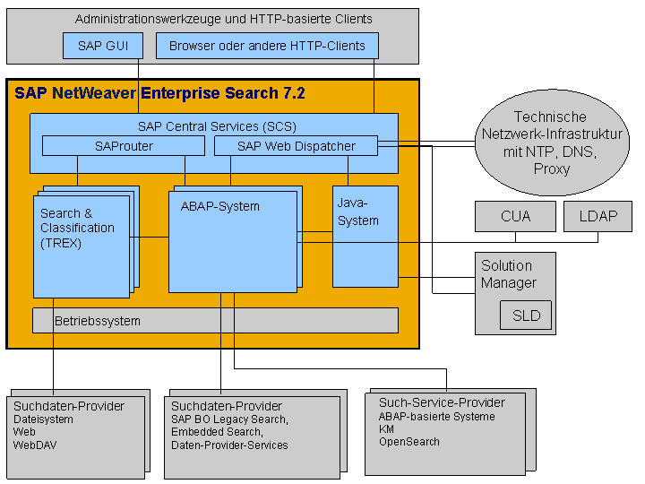
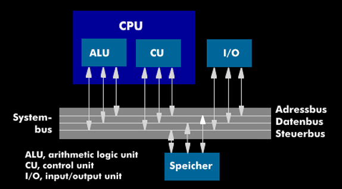
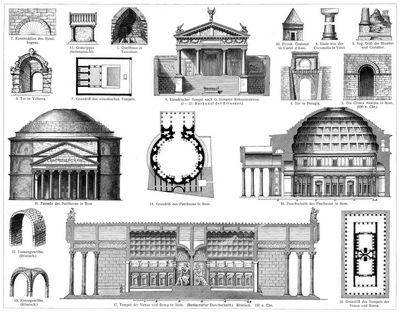
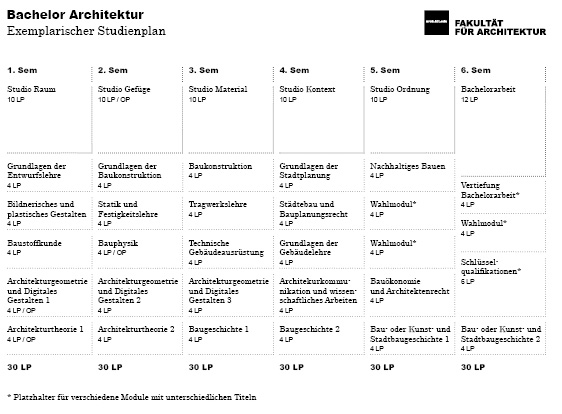

Photo gallery
2020.11.28 09:19













- Architektur Studieren: Inhalte, Ablauf, Berufschancen
Bronzeguß im Wachsausschmelz-Verfahren Bugholz-Stühle Wichtige Informationen für Q11 und Q12 bei Hock Container-Haus Kriterien zur Werkanalyse der Architektur / Konstruktion / pdf / Präsentation - Prozessor-Architektur - Elektronik-Kompendium
Diese Seite befindet sich im Aufbau. GK3 Gesellschaft für Architektur und Sachverständigung mbH Frankenstr. 233 45134 Essen 0201 777861, F. 0201 777863 mail@gk3-architektur.de www.gk3-architektur.de ... - Aufbau der Klimaanlage: So funktioniert ... - Architektur-Welt
Aufbau und Inhalt des Studiums Die Ateliers der Architektinnen an der BTU Cottbus bieten Platz zum Arbeiten und Präsentieren von Entwürfen. Das Bachelor-Studium der Architektur an der BTU Cottbus-Senftenberg vermittelt in 6 Semestern erste entwurflich-praktische und wissenschaftlich-theoretische Fähigkeiten und Kenntnisse über Architektur. - HafenCity Universität Hamburg (HCU): Aufbau | Lehrinhalte
Aufbau des Studiums Zulassung zum Masterstudium Anmeldung zu Lehrveranstaltungen und Bewerbungspools Anerkennung von Lehrveranstaltungen oder Studienwechsel Diplomarbeit Abschluss Masterstudium Architektur (Dipl.-Ing.) - Architektur des Mordes: Die Baupläne von Auschwitz-Birkenau
Im 1. Studienjahr SEHEN – FORMEN – EXPERIMENTIEREN stehen die Einführungen in architektonisches Denken und Gestalten im Vordergrund. Die Möglichkeiten von Architektur werden aufgezeigt und erfasst und die grundlegenden Fragestellungen und Herangehensweisen der Profession eröffnet. - Aufbau des Studiums - ar.tuwien - Fakultät für Architektur ...
Architektur Daten Die Innenfläche des 211,5 m langen und 132,5 m hohen Baus beträgt rund 15.160 m² (1,5 ha) und bietet rund 60.000 Menschen Platz, somit hat die Basilika St. Peter auch einen der größten Innenräume der Welt. Das Langhaus hat eine Länge von 187 m und eine Breite von 27,50 m, das Querschiff ist 138 m breit. - Start- DETAIL - Magazin für Architektur + Baudetail
Architektur des Barocks. Die Architektur des Barocks zeichnete sich durch Prachtbauten aus. Prunkvolle Paläste, Kirchen und Schlösser mit großzügigen Parkanlagen repräsentierten den feudalen Lebensstil von Fürsten und Klerus. - Im Aufbau - GK3 Architektur
Aufbau und Inhalt des Bachelor-Studiums Architektur. ArchitektInnen setzen sich mit den Fragen nach dem Zweck eines Bauwerks und dessen Integration in bereits Bestehendes auseinander. Dafür benötigen sie ein breites Kompetenz-Portfolio und erlernen daher zum einen kultur- und gesellschaftswissenschaftliche Grundlagen, Architekturgeschichte und Kunstgeschichte. - Architektur des Barocks - Merkmale und Bauwerke der Epoche
Unter griechischer Architektur versteht man die Architektur der alten Griechen; durch sie wurden auch die geschichtlichen Abläufe des antiken Griechenlands widergespiegelt. Zu den Baustilen der alten Griechen zählt die dorische, ionische und korinthische Ordnung. Hauptsächlicher Bestandteil ist die städtische Archit... - Master-Studium Architektur und Städtebau
„Es gibt einen Ort auf der Welt, der wüste Wildnis ist, einen Ort, bevölkert von Massen von Schatten der Toten, wo die Lebenden tot sind, wo nur Tod, Hass und Schmerz existieren."